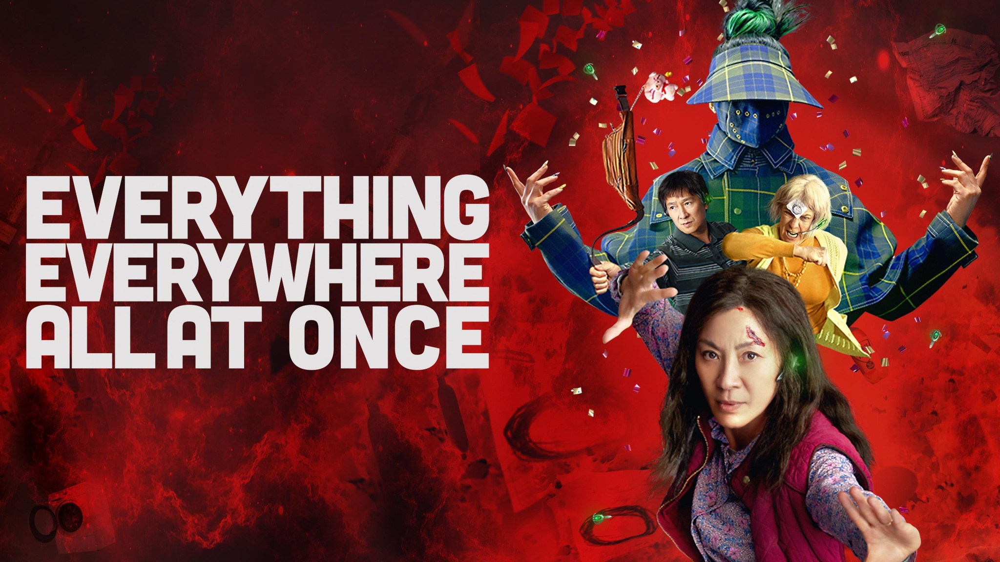
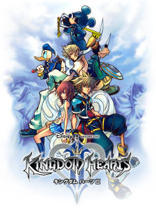

What I Am Celebrating

My name is Manuel Arteaga, and I am a senior graduating in Fall 2026. Graduation is the biggest thing I am celebrating this year because it represents many years of hard work, dedication, and persistence.
I started college during the COVID-19 pandemic, when most classes were online. Later, I had to adjust again when classes returned to face-to-face learning. Even though it was challenging, I kept working toward my goal.
I am also excited about what comes next because I am very interested in software and programming, including operating systems, apps, and video games.
A Little More About Me
Movies and video games are two things I really enjoy outside of school.
Favorite Movie

Everything Everywhere All at Once
Favorite Video Game

Kingdom Hearts II